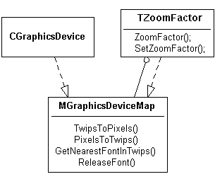

|
| |
Two desirable facilities of a GUI are:
device independence
zooming to reveal greater levels of detail or, conversely, more of a document
These two facilities are embodied in the two classes MGraphicsDeviceMap and TZoomFactor.
Device independence is facilitated by storing drawings and text in device-independent form and then converting the device-independent units (twips) into device-dependent units (pixels) for different devices such as screens and printers. The conversion interface is MGraphicsDeviceMap, and it is implemented by graphics devices.
TZoomFactor also implements this interface. It takes a mapping between twips and pixels, and then also applies a zooming factor: the larger the zooming factor, the more pixels per twip. The relationship between the classes is shown below:

Note that TZoomFactor not only implements MGraphicsDeviceMap but also uses it. The point is that the MGraphicsDeviceMap-supporting object used can either be a graphics device, or another TZoomFactor. This allows zooming to be applied to an already zoomed mapping.
Copyright ©2002 Symbian Ltd. 6.1-00174 |
|